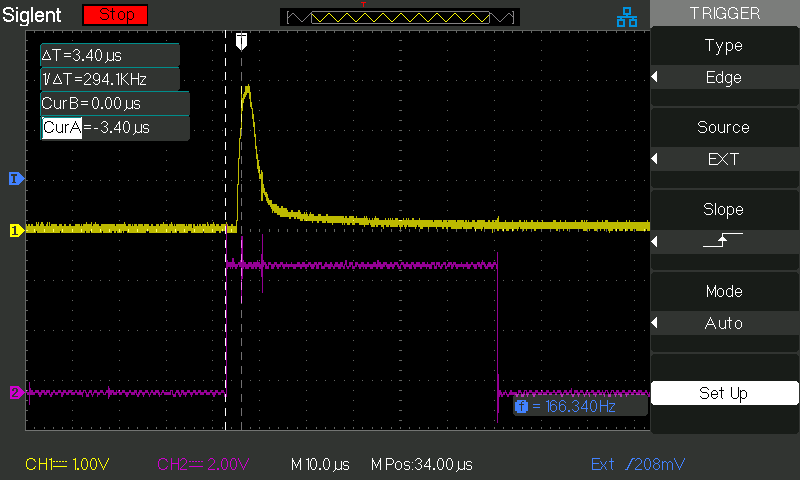
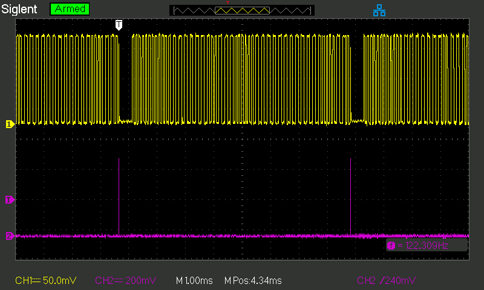
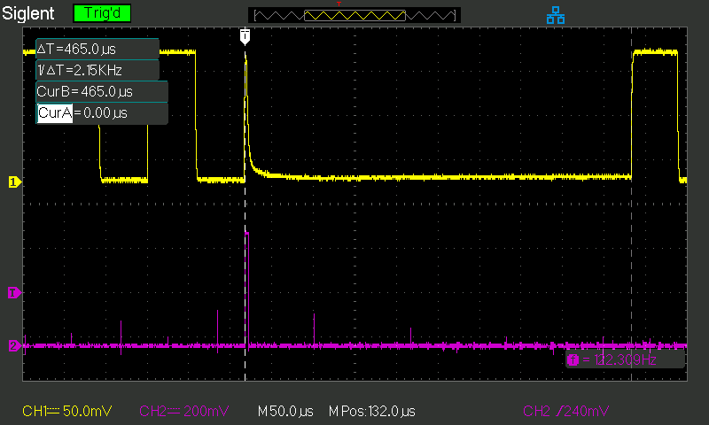
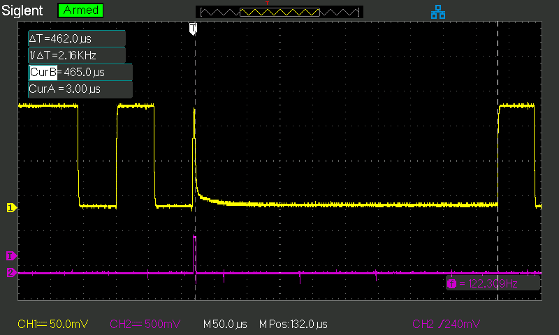
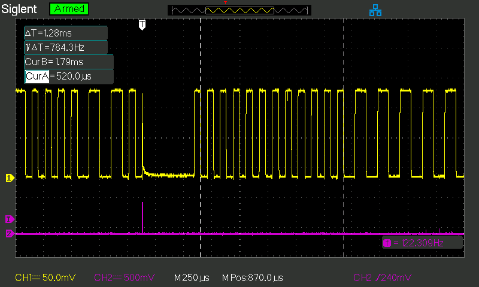

First cursor at transition signal by HW timer.
Trigger point when interrupt routine generates trigger signal pin enable.
In spite of that the enable signal goes low before that it takes some
time until the voltage on the output of the H-Brigde follows.

One DCC signal (Loco 3 speed step 0 (of 126) dir 0) and how it looks
with the cutout periods.

Cutout zoomed in.


Preamble zoomed in.
